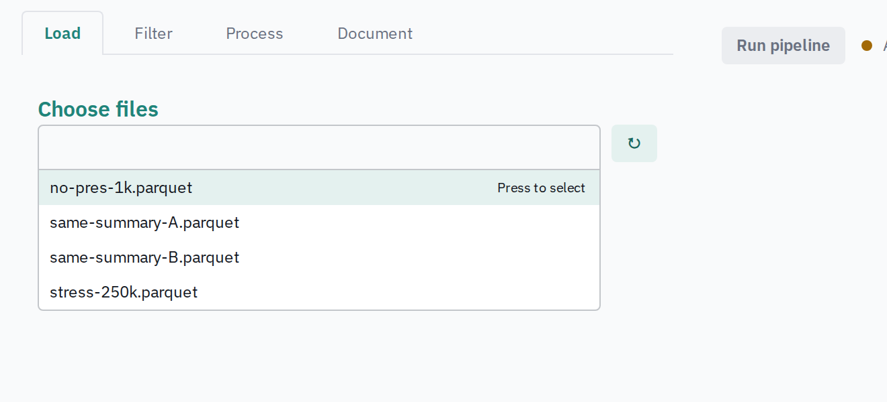
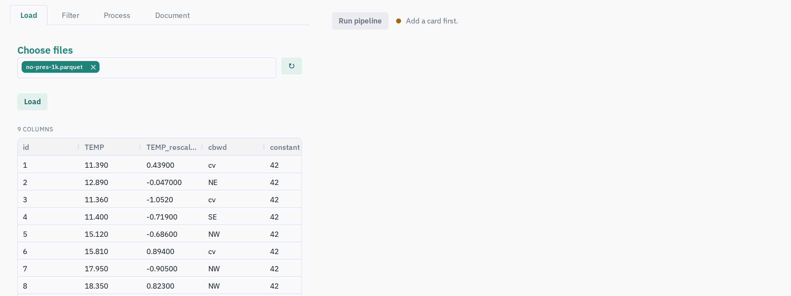
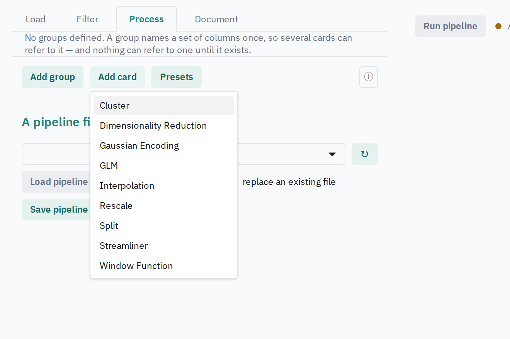
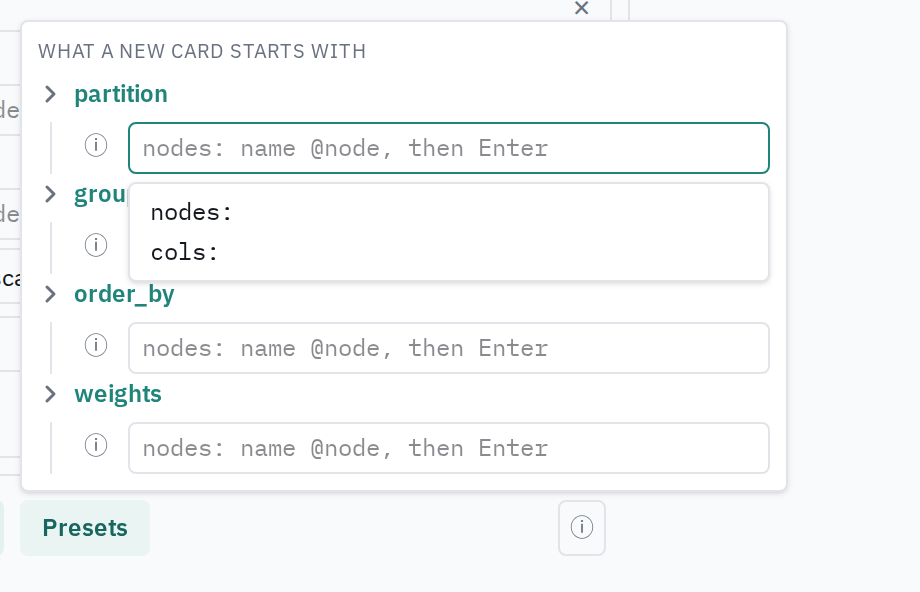
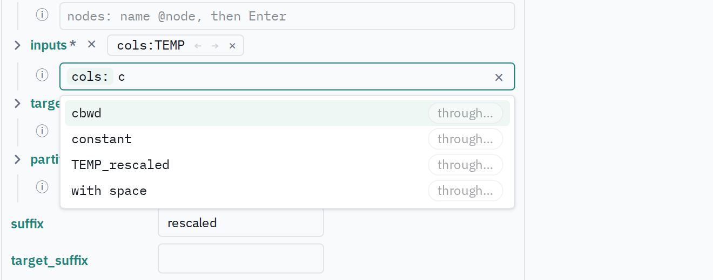

UI Guide
The UI is a browser page in two halves: on the left what you are building — the data, the filters, the pipeline — and on the right what the last run produced.
This guide has two parts. Using it is for anyone in front of the page. Working on it is for whoever will read or change the code.
Running it
Two processes. In one terminal, at the top of the repository, the Julia server — it holds the data and answers every question the page asks:
julia --project=DashiBoard bin/launch.jl path/to/datapath/to/data is the only folder the page can reach: tables, pipelines and filter documents are read from and written to it, and nothing outside it is ever listed.
In a second terminal, the UI:
cd dashiboard-ui
pnpm run startThen open http://localhost:3000. The dev server forwards every API call to the Julia server, so the page and the API share an origin exactly as they will when the built bundle is served beside the server.
Both need their dependencies installed once; see Getting Started.
Using it
The four tabs
| tab | what it is for |
|---|---|
| Load | choose one or more files from the data folder and load them as the source table |
| Filter | narrow the rows: checkboxes for categorical columns, bounds for numeric ones |
| Process | build the pipeline — the groups and cards that add columns |
| Document | the exact JSON that will be sent when you run |
The right-hand side shows what the last run produced: the output table, any plots the cards drew, the graph of how the cards relate, and each card's report.
Loading data
Pick files in the Load tab and press Load. Only the data folder is listed, and only files DashiBoard can read.

The table appears on the right, and its columns become the vocabulary every picker offers from then on.

Building a pipeline
The Process tab holds three kinds of thing, and one row of actions at the foot of the list:
[Add group] [Add card] [Presets] ⓘA card
Add card opens a menu of card types. Picking one adds the card at the end of the pipeline and puts the cursor in its name box — the name is what other cards refer to it by.

A card is folded to one line: its type, its name, and a dot saying where it stands. Unfold it to fill in its fields. At its foot are three buttons:
- Confirm asks the server about this card alone and marks it green or red.
- Clear empties it back to what a new card of that type would hold.
- Remove deletes it.
The dot beside the name is amber until you ask, green or red once the server has answered, and amber again the moment you edit — an answer is only ever about the content it was given.
A group
Add group adds a named set of columns, so several cards can refer to one list instead of repeating it. A group is edited with the same picker a card's field uses, and carries the same three buttons.
Nothing can refer to a group until it exists, which is why groups are listed above the cards.
Presets
Cards usually share the same partition, order_by, group_by and weights. Presets opens a small panel where you set those once; every card created afterwards starts with them. Cards already on the page are never touched, and clearing a preset only affects the next card.

The list of fields is not hard-coded: it is every field at least two card types share, minus what a card actually operates on (inputs, targets, input).
Choosing columns: the selector field
Wherever a card asks for columns, you get the same control, and it accepts three kinds of thing:
- cols — a column of the loaded table;
- groups — a group you defined;
- nodes — everything another card produced.
Each choice may also pass through one or more cards, which names the column that card made from it. A chain is ordered: → impute → zscore is not → zscore → impute.
The field shows what it holds as chips beside its name, and offers two ways to add to it.
By typing
The box under the name takes kind, then a name, then optional pass-through steps:
cols: bill_length →impute →zscore| key | effect |
|---|---|
c, g or n then Tab | choose cols, groups or nodes |
type, then Tab | take the top match; ↑ ↓ choose another |
| a node name after a name | pass through it; repeat for a chain |
Enter | add it, as a chip |
Backspace | undo the last part |
Esc | close the list, then clear the box |
Tab with nothing typed | leave the field |
← from the empty box | reach the chips: Delete removes, Alt+←/→ reorder |
F1 | show these keys |

The list of suggestions is always showing while the box has the caret, and nothing is highlighted until you type or press ↓ — so Tab never takes a choice you did not make.
By clicking
Unfold the field to get the same vocabulary as a list, one tab per kind. Clicking a name adds it directly; through… opens the nodes it may pass through, which you switch on in the order you want them, then add.
Only nodes that can actually take the value further are offered, and a card is never offered itself or anything that depends on it — those would make a loop the server refuses.
Running
Run pipeline, top right. Beside it a dot says whether what is on screen has been run, and a line names anything that was asked about and refused. A pipeline can be run even so: the line says where to look, it does not stop you.
Saving
At the foot of the Process tab, Load pipeline, Save pipeline and Download pipeline work on the whole document — its groups and its cards — in the server's data folder. Presets are yours, not the pipeline's, and are not saved with it.
Working on it
Where things are
| path | what lives there |
|---|---|
dashiboard-ui/src/stores.ts | the document, the filters, the verdicts, the presets — all module-level stores |
dashiboard-ui/src/left-tabs/ | the four sections of the left pane |
dashiboard-ui/src/components/ | the controls, chiefly SelectorField and IRField |
dashiboard-ui/src/ir.ts | the server's card description turned into widget descriptors |
dashiboard-ui/src/selector.ts, selectorEntry.ts, through.ts | the selector's model, its typed grammar, and which chains are possible |
DashiBoard/src/handlers.jl | every route the page calls |
Three ideas the code rests on
The store is the document. What is saved is the JSON that was authored, never a reconstruction from widget values. The stores are kept in sessionStorage, so a reload does not lose the work and two tabs do not overwrite each other.
The server owns names. A through chain names a column by concatenating card suffixes, and that rule lives in Pipelines. The UI never computes a resolved column name; it writes the document and asks the server what it got. POST /probe-pipeline answers on every edit with each card's inputs and outputs, what nothing produces, and what each item may refer to without a loop.
Red means you asked. An item is amber until a Confirm, a load or a run puts a question to the server. A verdict is bound to the exact content that was asked about, so any edit expires it. The continuous probe never turns anything red by itself.
The selector, in code
SelectorField draws one field. Its model is a list of items — {cols: [...], through: [...]} as the document holds them — expanded into rows of one value each for editing, and collapsed back on write (selector.ts). The same value may appear twice under different pass-through chains, which is why a row carries its chain.
selectorEntry.ts is the typed grammar as a pure state machine: kind → name → chain → finish, with no DOM, so every key in the table above is tested as data. through.ts decides which cards a chain may pass through next, from what the probe said each card reads and writes.
Tests
cd dashiboard-ui && npx vitest run # the UI
julia --project=DashiBoard/test DashiBoard/test/dashiboard.jl # the routes